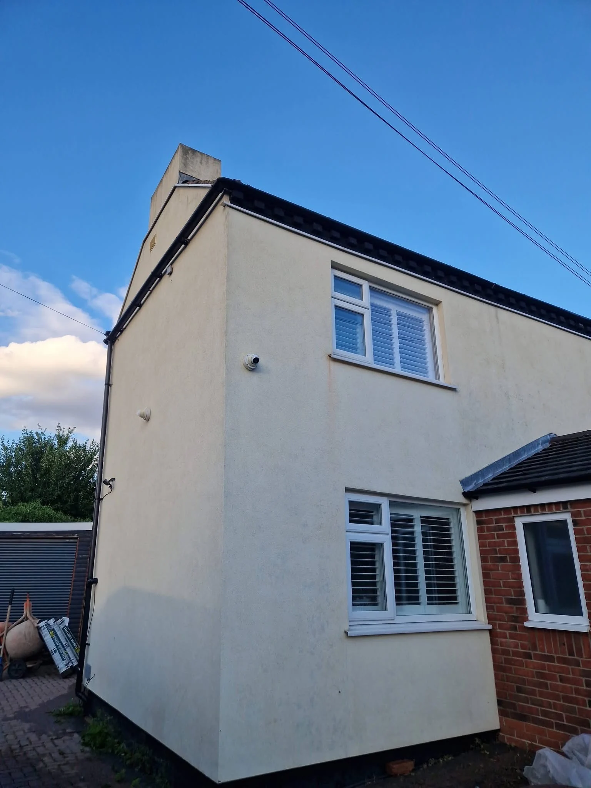

BRIDGEND & SURROUNDING AREAS
Fresh surfaces.
A brighter home.
Soft washing, roof, render, patio and driveway cleaning for homes and businesses. Exterior cleaning in Bridgend and surrounding areas.
Bridgend basedExterior cleaningFree quotes
BRIDGEND BASED. PROPERTY PROUD.
A fresher finish.
From roof to driveway.
Procleaninguk provides reliable exterior cleaning for homes, rental properties and commercial premises. From fresher render to cleaner paving, we help keep your property looking its best.
We discuss the surface, access and cleaning requirements before agreeing the work. Tell us what needs attention and we will provide a free, no-obligation quote.
Get to know Procleaninguk →

THE DIFFERENCE A CLEAN CAN MAKE
Refresh the surface.
Rediscover the space.
A cleaner patio, driveway or exterior wall can transform how a property feels. We assess the material and choose a suitable approach to the work.
These photographs illustrate exterior cleaning results and are reused reference images, not Procleaninguk project claims.
View cleaning examples →WHAT WE DO
Fresh surfaces.
A brighter home.
The right approach for your roof, render, paving and property exterior. Choose a service to find out more.
Roof cleaning
Roof cleaning enquiries assessed around your roof surface, condition and access. Contact Procleaninguk for a free quote.
Explore this service →Patio cleaning
Remove accumulated dirt, algae and surface staining to bring your patio back to life. Contact Procleaninguk for a free quote.
Explore this service →Driveway cleaning
Restore the appearance of your driveway with professional exterior cleaning. Contact Procleaninguk for a free quote.
Explore this service →Exterior walls & soft washing
Exterior wall cleaning and soft washing to address algae, moss, mould and accumulated dirt. Contact Procleaninguk for a free quote.
Explore this service →HOMES · RENTALS · BUSINESSES
Your property.
Our attention to detail.
Tell us your postcode and the cleaning you need. We will confirm coverage and availability before arranging the next step.
Check availability →YOUR NEXT PROPERTY REFRESH
Tell us what
you have in mind.
Free quotes for exterior cleaning at homes, rental properties and businesses. Send your postcode and a few details to get started.
Prefer email? procleaninguk@proton.me
Photographs of the work and access are always helpful. You can attach them to your message before sending.
LET’S MAKE A START
Pride in your property.
Care in every clean.
Get in touch for a free, no-obligation quote.